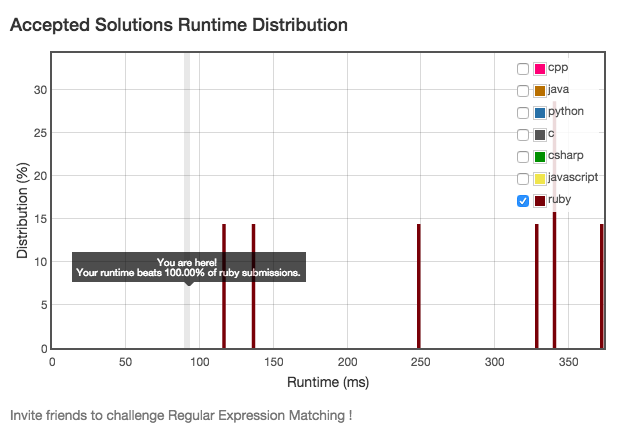
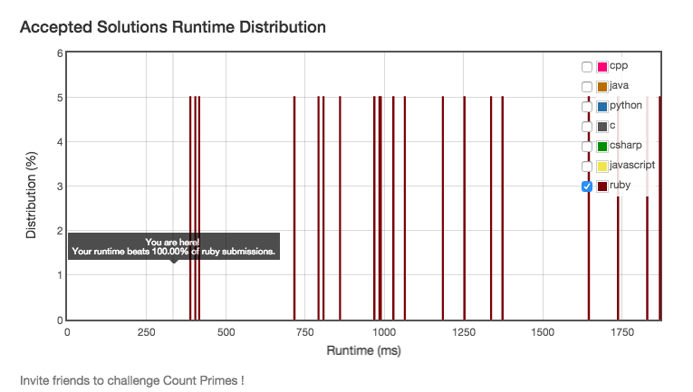
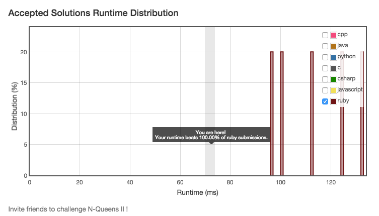

By @quakewang
Given a collection of numbers, return all possible permutations.
For example,
[1,2,3] have the following permutations:
[1,2,3], [1,3,2], [2,1,3], [2,3,1], [3,1,2], and [3,2,1].
// Java
public List<List<Integer>> permute(int[] num) {
LinkedList<List<Integer>> res = new LinkedList<List<Integer>>();
res.add(new ArrayList<Integer>());
for (int n : num) {
int size = res.size();
for (; size > 0; size--) {
List<Integer> r = res.pollFirst();
for (int i = 0; i <= r.size(); i++) {
List<Integer> t = new ArrayList<Integer>(r);
t.add(i, n);
res.add(t);
}
}
}
return res;
}
def permute(nums)
nums.permutation.to_a
end
Given a string s consists of upper/lower-case alphabets and empty space characters ' ', return the length of last word in the string.
If the last word does not exist, return 0.
Note: A word is defined as a character sequence consists of non-space characters only.
For example,
Given s = "Hello World",
return 5.
def length_of_last_word(s)
words = s.split(' ')
words.last ? words.last.length : 0
end
Given a non-negative integer num, repeatedly add all its digits until the result has only one digit.
For example:
Given num = 38, the process is like: 3 + 8 = 11, 1 + 1 = 2. Since 2 has only one digit, return it.
def add_digits(num)
r = num.to_s.chars.map(&:to_i).reduce(:+)
r <= 9 ? r : add_digits(r)
end
Given two binary strings, return their sum (also a binary string).
For example,
a = "11"
b = "1"
Return "100".
# @param {String} a
# @param {String} b
# @return {String}
def add_binary(a, b)
(a.to_i(2) + b.to_i(2)).to_s(2)
end
Say you have an array for which the ith element is the price of a given stock on day i.
Design an algorithm to find the maximum profit. You may complete as many transactions as you like (ie, buy one and sell one share of the stock multiple times). However, you may not engage in multiple transactions at the same time (ie, you must sell the stock before you buy again).
# @param {Integer[]} prices
# @return {Integer}
def max_profit(prices)
prices.each_cons(2).inject(0){|s,a| [s+a[1]-a[0], s].max}
end
Given an array of strings, group anagrams together.
For example, given: ["eat", "tea", "tan", "ate", "nat", "bat"],
Return:
[
["ate", "eat","tea"],
["nat","tan"],
["bat"]
]
# @param {String[]} strs
# @return {String[][]}
def group_anagrams(strs)
strs.inject(Hash.new([])) do |h, s|
h[s.chars.sort.join] += [s]
h
end.map{|k, v| v.sort}
end
Implement regular expression matching with support for '.' and '*'.
使用Ruby内置对象
# @param {String} s
# @param {String} p
# @return {Boolean}
def is_match(s, p)
s =~ /^#{p}$/ ? true : false
end
Count the number of prime numbers less than a non-negative number.
require
# @param {Integer} n
# @return {Integer}
require 'prime'
def count_primes(n)
Prime.each(n - 1).count
end
Follow up for N-Queens problem. Now, instead outputting board configurations, return the total number of distinct solutions.
Test Driven Development
# @param {Integer} n
# @return {Integer}
def total_n_queens(n)
[0,1,0,0,2,10,4,40,92,352,724,2680,14200,73712,
365596,2279184,14772512,95815104,666090624][n]
end
Given a non-negative integer num, repeatedly add all its digits until the result has only one digit.
For example:
Given num = 38, the process is like: 3 + 8 = 11, 1 + 1 = 2. Since 2 has only one digit, return it.
Follow up:
Could you do it without any loop/recursion in O(1) runtime?
# https://en.wikipedia.org/wiki/Digital_root
def add_digits(num)
1 + (num - 1) % 9
end
类似直接用算数公式证明的题目比如：Perfect Squares
Given an array of integers, every element appears twice except for one. Find that single one.
# @param {Integer[]} nums
# @return {Integer}
def single_number(nums)
nums.sort.each_slice(2).find{|s| s[0] != s[1]}[0]
end
def single_number(nums)
nums.inject(:^)
end
用XOR操作解Single Number系列的通用解法
Given an array of size n, find the majority element. The majority element is the element that appears more than ⌊ n/2 ⌋ times.You may assume that the array is non-empty and the majority element always exist in the array.
# @param {Integer[]} nums
# @return {Integer}
def majority_element(nums)
nums.sort[nums.size/2]
end
def majority_element(nums)
nums.inject([0, 0]) {|(x, c), i|
c == 0 || x == i ? [i, c+1] : [x, c-1]
}[0]
end
算法出处以及单步演示